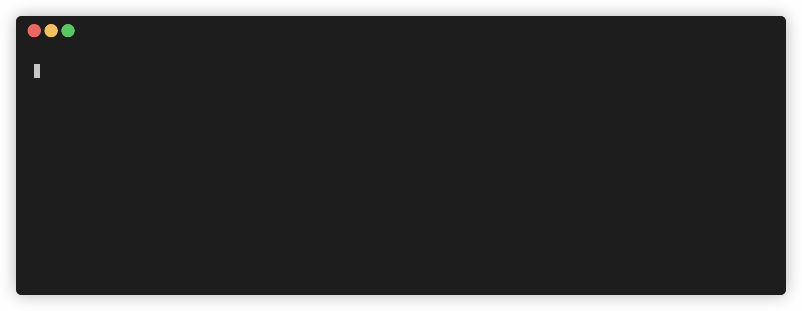
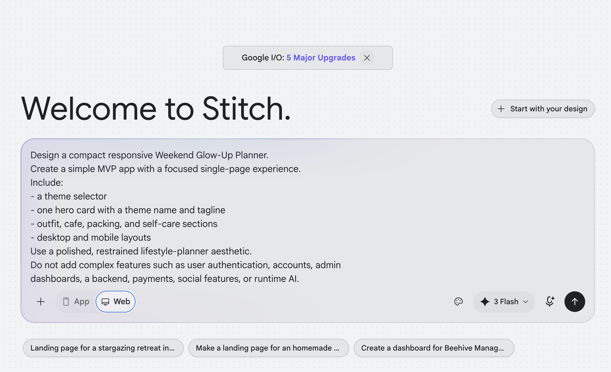
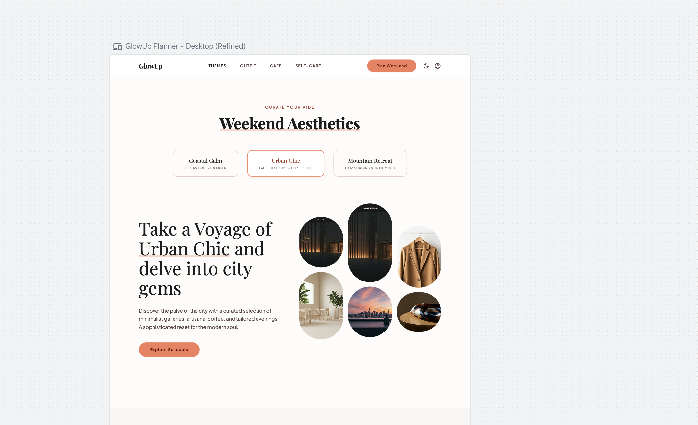
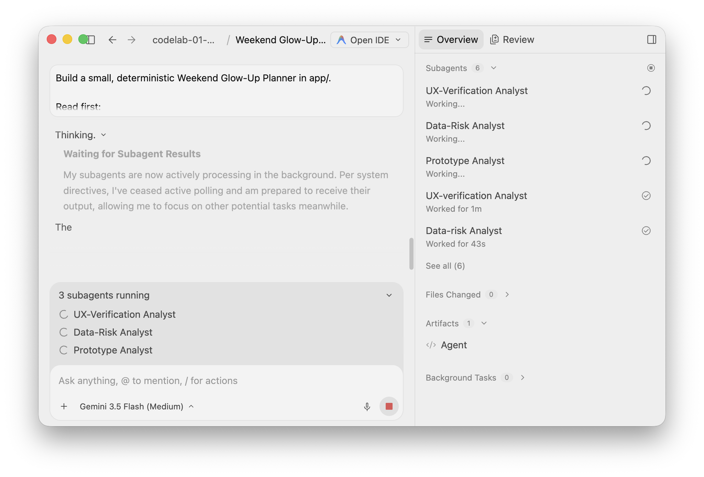
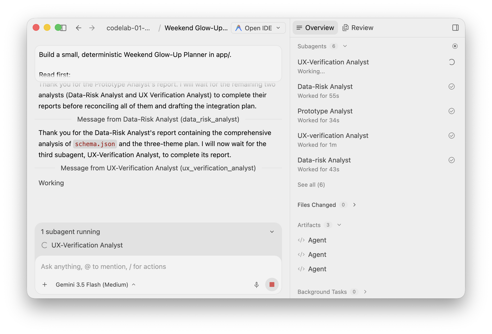
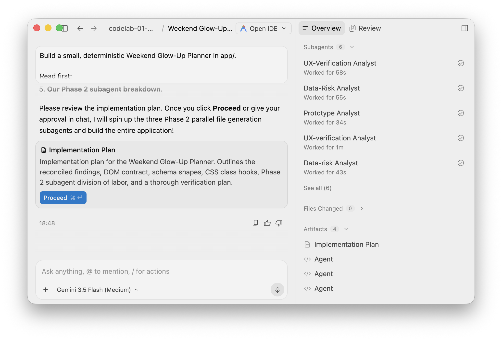
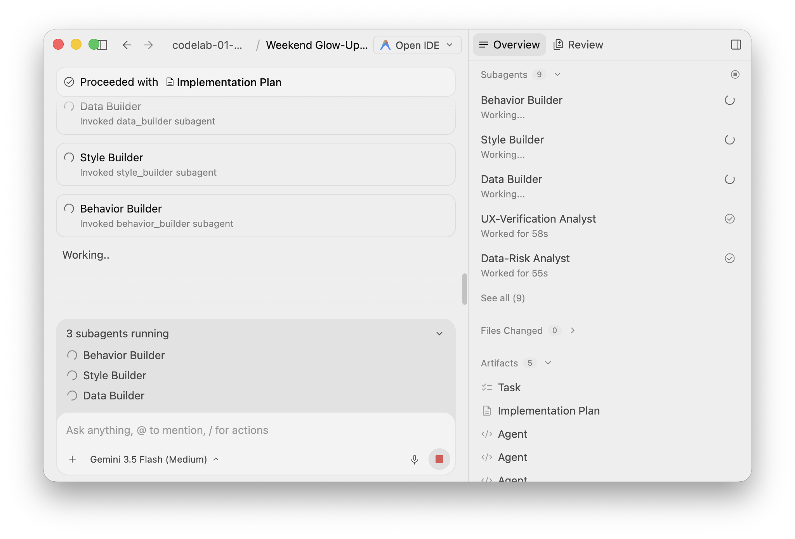
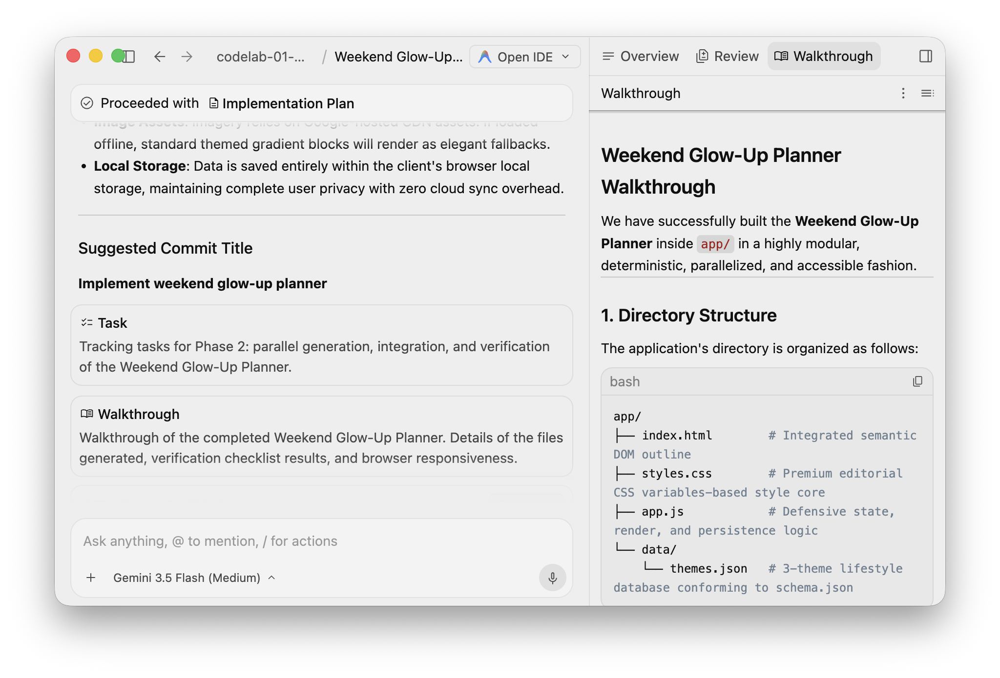
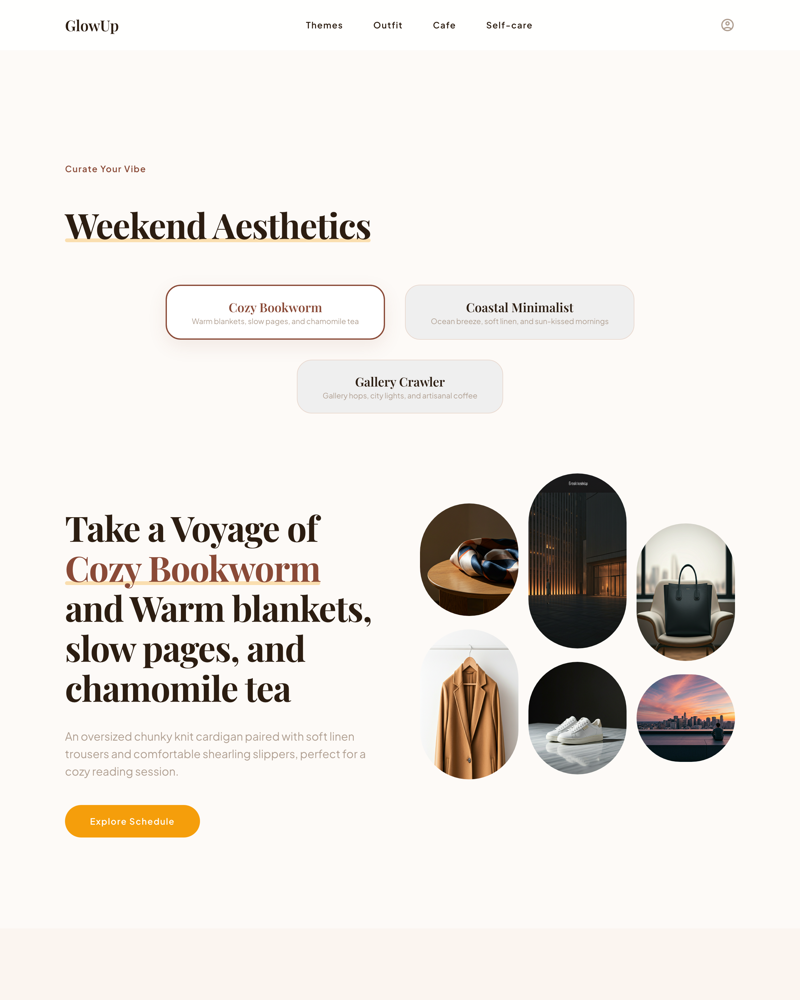

This codelab is part of the 2026 Agentic Architect Sprint by Google.
In it, you use Antigravity 2.0 to turn a Stitch prototype into a small, working Weekend Glow-Up Planner. The lesson is about how a single orchestrator agent decomposes the work and spawns short-lived subagents that run in parallel across two phases.
In Antigravity 2.0, the main agent can dynamically define and invoke subagents. Each subagent runs as a concurrent session with its own isolated context window, does not inherit the orchestrator's chat history, and consolidates its work into a single response back to the orchestrator. You will use this twice:
This codelab uses Local Mode, where agents work directly in the active project folders. Parallel generation stays conflict-free here because each generation subagent owns a different file. When peer agents must edit the same files concurrently, you need isolated Git worktrees instead — a separate integration discipline beyond this codelab's scope.
Official references:
A single-page planner with:
Target duration: 35–45 minutes.
Download and install Antigravity 2.0 from:
This codelab uses Antigravity 2.0 — the desktop command center, which has the white logo. Do not use the Antigravity IDE (black logo); it is a different product surface, and the orchestrator-and-subagents workflow taught here is driven from the 2.0 desktop app. Confirm the app you open shows the white logo before continuing.
Follow the current onboarding and sign-in flow shown by the application.
Choose the path available to you:
If you use the enterprise path, ask your administrator to complete the documented setup:
aiplatform.googleapis.com.roles/serviceusage.serviceUsageAdmin.roles/aiplatform.user.The enterprise guide documents supported Antigravity endpoints as global, eu, and us. Follow your organization's selected configuration.
Official reference: Use Antigravity with Gemini Enterprise Agent Platform
This codelab requires a recent Python (for a local static server) and a browser. It also requires that Antigravity 2.0 exposes its native subagent delegation in the product surface you use.
python3 --version
Confirm the app can spawn subagents before continuing.
Get your workspace/ folder. It holds the data and UX contracts; you add your own Stitch design in the next step.
Pull down just the workspace/ folder with a sparse checkout — no copy step, this folder is your working directory:
git clone --no-checkout --depth 1 https://github.com/evanca/gde-sprint-26-subagents-public.git
cd gde-sprint-26-subagents-public
git sparse-checkout init --cone
git sparse-checkout set workspace
git checkout

Your workspace/ now contains:
workspace/
├── design/ # your Stitch export goes here (next step)
├── contracts/
│ ├── acceptance.md # UX contract
│ └── schema.json # data contract
└── app/ # agent-owned output (starts empty)
Inspect workspace/contracts/acceptance.md:
# Acceptance checklist
- Exactly three themes are available.
- Selecting a theme updates every content section.
- Checklist state persists after a page refresh.
- Controls work with a keyboard and have visible focus.
- Invalid or missing theme data produces a readable error.
- Browser verification reports no console errors.
In the next step you generate your own Stitch prototype into workspace/design/.
Stitch gives the agent a concrete visual starting point, reducing the time spent inventing a layout from scratch.
Open Stitch and enter:
Design a compact Weekend Glow-Up Planner.
Create a simple MVP app with a focused single-page experience.
Include:
- a theme selector
- one hero card with a theme name and tagline
- outfit, cafe, packing, and self-care sections
- a clean desktop layout
Use a polished, restrained lifestyle-planner aesthetic.
Do not add complex features such as user authentication, accounts, admin
dashboards, a backend, payments, social features, or runtime AI.

Use one or two follow-up prompts to make the design feel like yours. You can mention your favorite colors, preferred visual style, or a layout detail you want changed.
For example:
Use lavender, cream, and deep plum as the main colors. Keep strong contrast
for text and controls.
Tighten the section spacing and keep the theme selector easy to reach.
Keep the same required sections and stop once the desktop layout feels coherent. The goal is a useful visual direction, not a perfect final app.

Confirm that the generated design contains the requested sections and a coherent desktop layout. The exact visual output can vary.
Export the design as a .zip and extract its contents directly into:
workspace/design/
Treat the Stitch export as a prototype and visual reference. Antigravity will turn it into the small, deterministic app required by this lab.
Antigravity agents work within Projects.
+ control.workspace folder.Local Mode is appropriate here because one orchestrator owns the final implementation in app/ and wires together the parts its subagents produce. The subagents return reports in Phase 1 and own separate files in Phase 2, so no two agents compete for the same file.
Official reference: Antigravity 2.0 getting started
Send the following request to the agent. It instructs the agent to act as an orchestrator and to delegate to parallel subagents in both phases.
Build a small, deterministic Weekend Glow-Up Planner in app/.
Read first:
- design/ as the visual prototype
- contracts/schema.json as the data contract
- contracts/acceptance.md as the completion contract
Act as an orchestrator that delegates to parallel subagents. Do not do the
analysis or the file generation yourself in a single pass.
Phase 1 - parallel analysis (report-only subagents):
Spawn three subagents and run them in parallel. Each only inspects and returns
findings; none may edit files.
1. Prototype analyst: inspect design/. Return at most 8 bullets on the reusable
layout and visual hierarchy.
2. Data-risk analyst: inspect schema.json. Return at most 8 bullets on the
required fields, likely rendering risks, and a compact three-theme data plan.
3. UX-verification analyst: inspect acceptance.md and design/. Return a short
keyboard, accessibility, and console-verification plan.
After the three reports return, reconcile them and state the trade-offs you are
making. Then define a small integration interface the next phase builds against:
- the DOM contract index.html will expose (element ids/classes for each section,
the theme selector, and a polite live region)
- the exact shape of data/themes.json (conforming to schema.json, exactly three
themes)
- the CSS class hooks, and how app.js reads the data and updates the DOM
Phase 2 - parallel generation (disjoint file ownership):
You own app/index.html. Spawn three subagents and run them in parallel. Each owns
exactly one file and builds strictly against the interface above. No two
subagents may edit the same file.
1. Data builder -> app/data/themes.json: exactly three themes conforming to
schema.json.
2. Style builder -> app/styles.css: layout, the three theme palettes, and
visible keyboard focus.
3. Behavior builder -> app/app.js: load themes, render every section, theme
switching, checklist persistence via localStorage, readable empty and error
states, and a polite live region announcing result changes.
Then, as the orchestrator:
- write app/index.html to wire the three artifacts together
- use plain HTML, CSS, JavaScript, and JSON only - no dependencies, backend,
authentication, or runtime AI
- verify every item in contracts/acceptance.md
- finish with a concise summary of what each subagent produced, how you
integrated them, the verification results, and any remaining limitation
While the request runs, observe Antigravity 2.0:
index.html and performs integration.As the run starts, the orchestrator spawns the three Phase 1 analysts and runs them at once:

Each analyst returns a focused, report-only result, and the orchestrator collects all three:

The orchestrator reconciles the reports into an implementation plan — the integration interface the next phase builds against — and then pauses for your approval. Review the plan and click Proceed (or approve in chat) to launch Phase 2.

After you approve, the orchestrator spawns the three Phase 2 builders, each owning one file, and runs them concurrently:

The analyses are independent, so running them in parallel reduces waiting time, and report-only subagents act as context firewalls: detailed inspection does not occupy the orchestrator's working context. Generation parallelizes for the same reason, but only after the orchestrator fixes an interface that lets each file be built in isolation.
The orchestrator still owns the architecture. It reconciles the reports, defines the contract, and integrates the parts rather than blindly concatenating subagent output.
Official reference: Antigravity subagents
Before running the app, inspect the agent's final response and the generated files.
Confirm that:
data/themes.json, styles.css, or app.js.index.html and explained at least one trade-off.app/ contains a static, dependency-free implementation.Do not continue until you can explain how the orchestrator turned three reports into one interface, and three files into one integrated app.
The orchestrator closes with a walkthrough summarizing what each subagent produced and how the files were integrated:

Review the integrated app in a browser. The quickest path is to let the agent open it for you — send:
Serve the app in app/ on a local port and open it in Chrome so I can review the Weekend Glow-Up Planner.
Or start a server yourself:
cd workspace/app
python3 -m http.server 8000
Open the app and verify:

Compare the result with contracts/acceptance.md, then decide: iterate on the design, or keep it as is.
To iterate, send one narrow correction to the orchestrator — name the exact file(s) to change so the disjoint ownership still holds. For example:
Refine the Weekend Glow-Up Planner: <describe the change you want>. Change only the files needed for this change, leave the other files untouched, and keep contracts/acceptance.md passing.
Re-check only the items you changed. When the app satisfies the checklist, the build is done.
You used a single Antigravity 2.0 orchestrator to spawn parallel subagents twice — first to analyze, then to generate disjoint parts of the app — and you shipped a verified UX from a Stitch prototype without any agent editing another's file.
You practiced:
Subagents parallelize work that can be partitioned cleanly. When peer agents must edit the same files concurrently, you need filesystem isolation instead — see Parallel Release Worktrees.